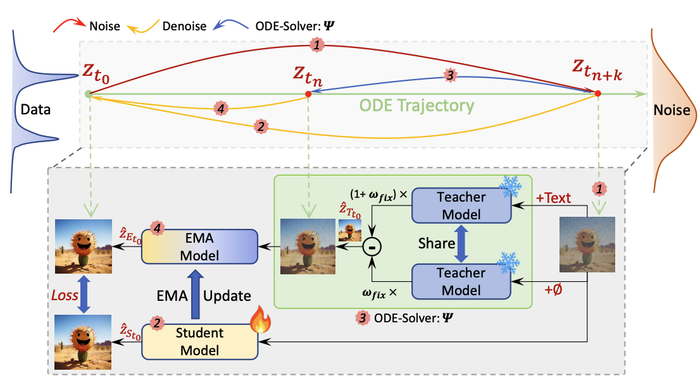
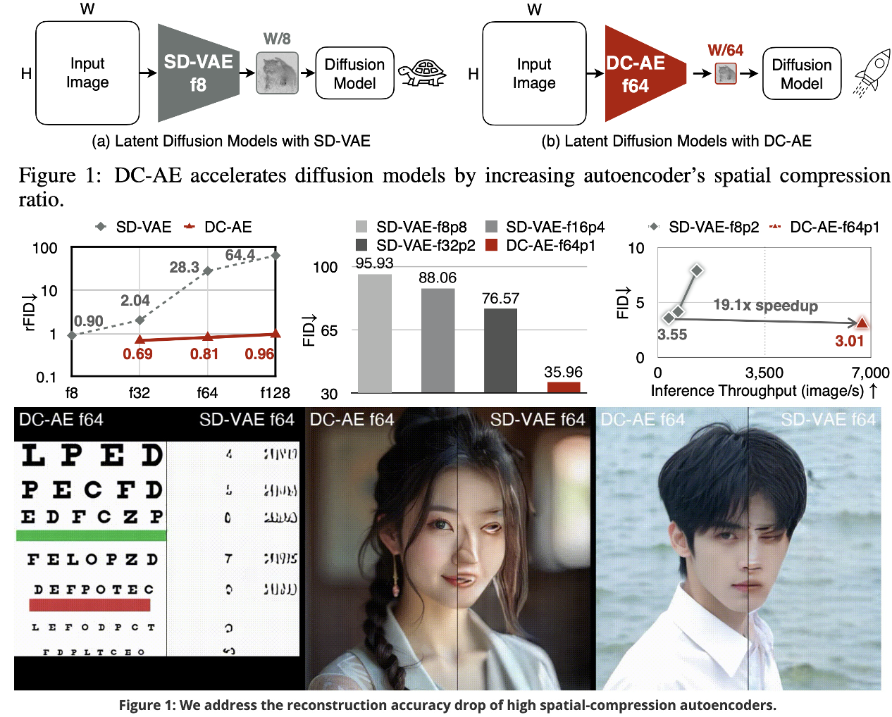
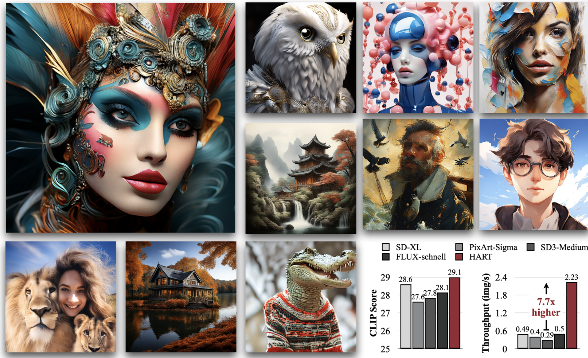
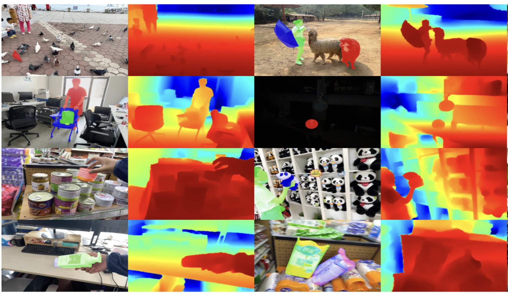
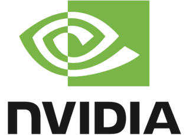

Junsong Chen
陈俊松
About Me
I am currently a research intern at NVIDIA Research supervised by Dr. Enze Xie and Prof. Song Han. I am also a Ph.D. student in MMLab at The University of Hong Kong under the supervision of Prof. Ping Luo. Previously, I have received my M.Phil. degree from IIAU Lab, advised by Prof. Huchuan Lu. My research area is the intersection of AIGC and machine learning, especially algorithm and system co-design for generative AI and its applications.
News
- [01/2026] Awarded the Tencent Project Up Scholarship, 2026 (50W RMB, 15 students in China).
- [01/2026] Awarded the KAUST AI Rising Star Award, 2026. （25 speakers over the world）
- [01/2026] 📺SANA-Video is accepted to ICLR’26 🇧🇷️.
- [11/2025] 📺SANA-Video is released and open-sourced 🎬️.
- [6/2025] 🏃SANA-Sprint(Highlight), DC-AE 1.5 and DC-AR are all accepted to ICCV’25 ⛱️.
- [5/2025] 💪SANA-1.5(Inference Test Scaling) is accepted to ICML’25.
- [1/2025] ⚡️Sana(Oral) , DCAE , HART are all accepted to ICLR’25.
- [10/2024] “⚡️SANA: Efficient High-Resolution Image Synthesis with Linear Diffusion Transformer” is released.
- [06/2024] “PixArt-Σ: Weak-to-Strong Training of Diffusion Transformer for 4K Text-to-Image Generation” is accepted to ECCV’24.
- [03/2024] “PixArt-δ: Fast and Controllable Image Generation with Latent Consistency Model” is accepted to ICML’24 workshop.
- [01/2024] “PixArt-α: Fast Training of Diffusion Transformer for Photorealistic Text-to-Image Synthesis” is accepted as Spotlight paper to ICLR’24.
- [07/2023] “MetaBEV: Solving Sensor Failures for BEV Detection and Map Segmentation” is accepted to ICCV’23.
- [03/2023] “ARKitTrack: A New Diverse Dataset for Tracking Using Mobile RGB-D Data” is accepted to CVPR’23.
Blog

Selected Publications
-
 ICCV
ICCV, 2025. Highlight
ICCV
ICCV, 2025. Highlight -
 ICML
-
 ICLR
ICLR
-
 ICLR
-
 ICLR
-
 CVPR
 ICLR
ICLR
 ICCV
ICCV
Industry Projects
Our research SANA contributes to NVIDIA's flagship generative AI projects including DLSS and Cosmos. Besides, SANA-Sprint is in NVIDIA 3D AI Blueprint.
Talks
Experiences
-
NVIDIA, US remoteMay 2024 - Present
-
The University of Hong Kong, Hong KongApril 2023 - April 2024
Awards & Honors
Services
Conference Reviewer: ICLR-2025, ICML-2025, NeurIPS-2025, ICLR-2026, CVPR-2026
Journal Reviewer: T-PAMI
Powered by Jekyll and Minimal Light theme.